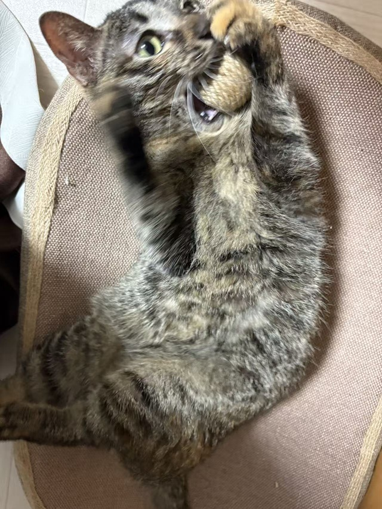
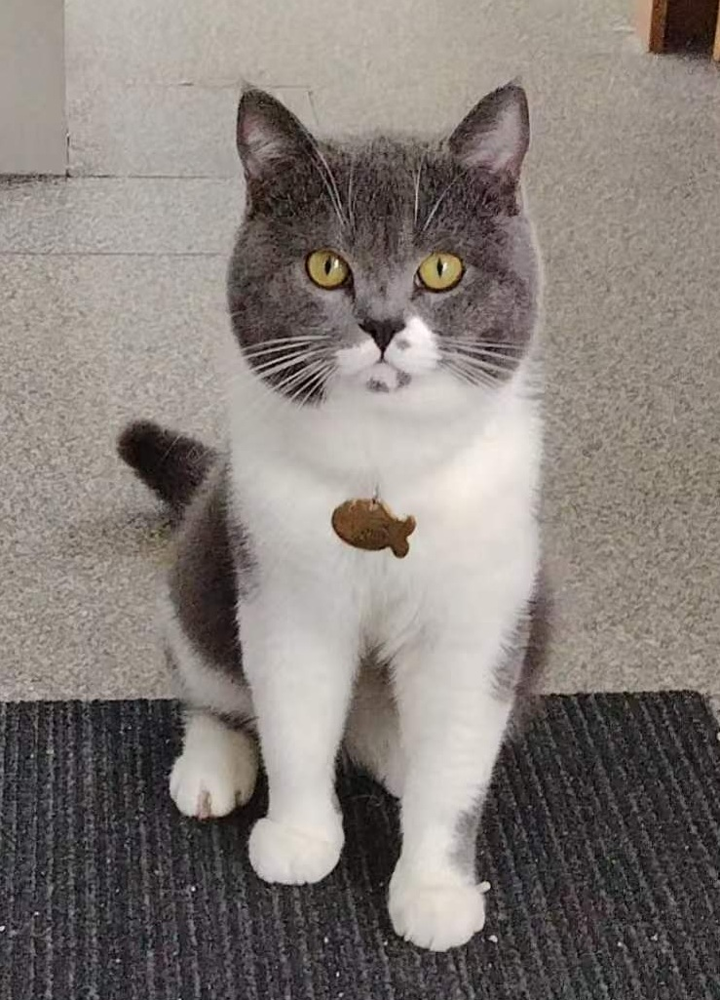

日常

今日の面面のんびり、気ままに、お気に入りのベッドでごろごろしながら、 大好きなおもちゃに夢中です。 遊ぶ時間も、くつろぐ時間も、全部が面面らしい大切なひととき。 今日もマイペースに過ごしています。

「そろそろおやつの時間じゃない？」 そんな期待いっぱいの目で、 飼い主さんをじっと見つめています。 食いしん坊な二弟にとって、おやつの時間は一日の楽しみです。

今日の面面のんびり、気ままに、お気に入りのベッドでごろごろしながら、 大好きなおもちゃに夢中です。 遊ぶ時間も、くつろぐ時間も、全部が面面らしい大切なひととき。 今日もマイペースに過ごしています。

「そろそろおやつの時間じゃない？」 そんな期待いっぱいの目で、 飼い主さんをじっと見つめています。 食いしん坊な二弟にとって、おやつの時間は一日の楽しみです。